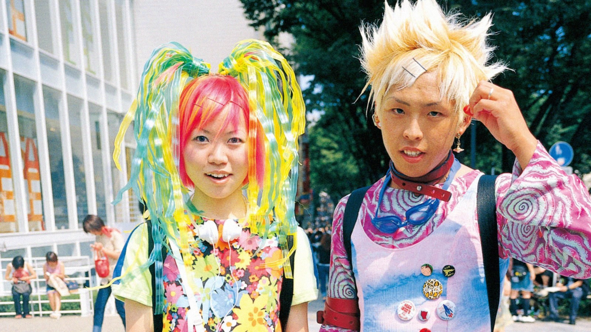
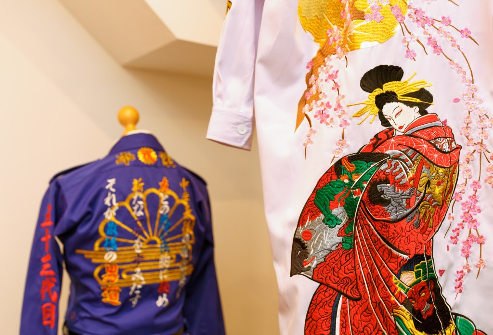
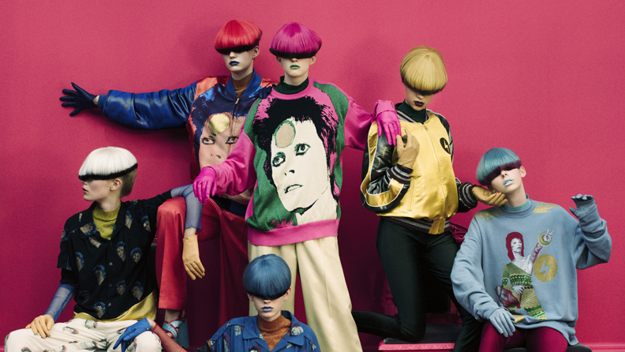
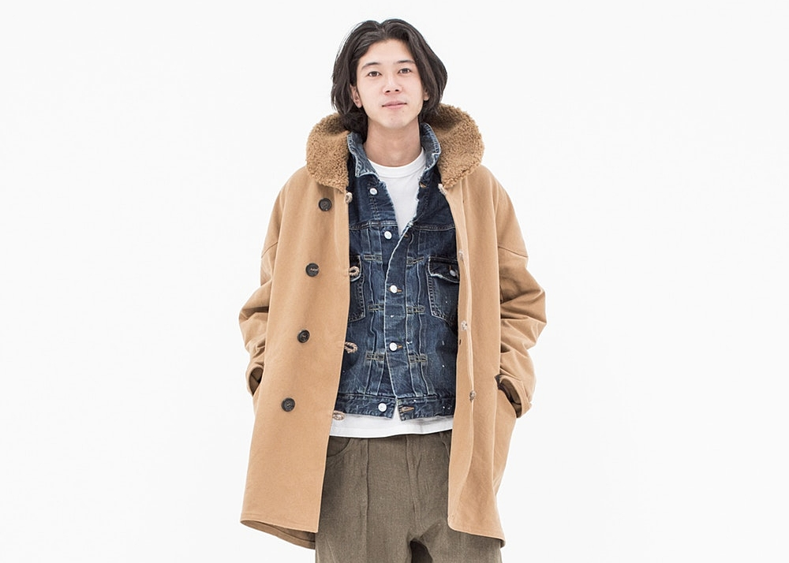
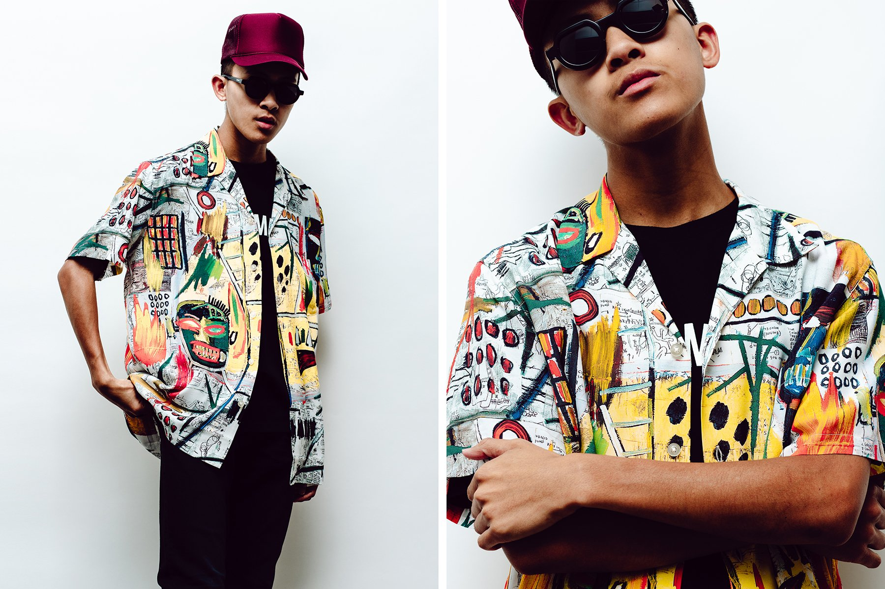

The origin of Japanese street wear dates back as far as the 70s/80s, when Japanese youth, for the first time, was standing up against their elders. Their mindset now rebellious, non conforming and defiant. By the 90s a lot of these young people had moved in an attempt to start a new away from traditional families. A small neighbourhood called Urahara, placed between Harajuku and Ayoama in Shibuya, Tokyo was popular for its cheap rent and became home to a lot of youth in this type of situation. From then, many boutiques started to pop up, offering new styles not yet seen, influenced by western fashion.
Small Shops: UNDERCOVER, WTAPS, NEIGHBORHOOD
Boutiques: NOWHERE and A Store Robot
It didn’t take long for popularity to grow, everyone wanted to buy and wear this new aesthetic, getting exposure in magazines such as ‘Fruits’ that shaped the style.
 https://www.dazeddigital.com/fashion/article/29001/1/fruits-future-pop-fashionThe publication helped bring the fluid, flamboyant, and fresh aesthetics of Japanese youth culture to the world. However, Aoki discontinued the publication in 2017 claiming there were “no more fashionable kids to photograph”.
You can see pictures from the magazine as Tokyo-based editor Chris Tordoff decided to dedicate an Instagram to it. Called @fruits_magazine_archives, the page gives the publication a new lease of digital life.
We could say that the Harajuku aesthetic commonly uses looser fitting, vintage inspired garments, and modernized Japanese garments. it simply cannot be defined by this surface level analysis. Harajuku is much more about a state of mind than an item of clothing. Most brands were born out of a misfit mentality, pushing their desire to dress different, and live different from the traditional families and culture they were born into. Attempts at trying to pinpoint a definite style would be useless, as the clothes are only a means to a bigger picture. Each brand interprets and reflects the rebellious/youthful mentality in a unique way.
TOKKOU
(Japanese term tokkō-fukku) ‘Special attack clothing’ Japanese-born, London-based fashion brand owned by Masa. He draws inspiration from the Bousou-zoku subculture, which involves biker gangs in the 80s. Masa believes this culture is disappearing, which is why he wants to emulate its legacy through his brand. TOKKOU is known for its famous Okayama denim and punk-like embroidered phrases – such as the roughly translated “Unify a country” and “Not giving up.”
 https://boyfriend-mag.com/ldc-designer-feature-tokkou/?v=79cba1185463UNDERCOVER
Their motto, “We make noise, not clothes.” explains their design philosophy -rebellion and disruption are at its core. Jun Takahashi, the label’s founder, blends pop culture with punk aesthetics to create what is one of the more influential Japanese streetwear brands today
 https://fashionindustrybroadcast.com/2019/08/05/jun-takahashi-undercover-designer/YOJI YAMAMOTO
The label takes Japanese minimalism to the next label, with its timeless designs, simplicity and impeccable craftsmanship. They also tend towards being more draped and having a layered style, with asymmetric silhouettes and oversized fits.
 https://www.irenebrination.com/irenebrination_notes_on_a/2020/01/yohji-yamamoto-maw-2020.html
https://www.irenebrination.com/irenebrination_notes_on_a/2020/01/yohji-yamamoto-maw-2020.html
VISVIM
While visvim started off as a footwear manufacturer, they now have a full clothing line which is heavily inspired by founder Hiroki Nakamura’s travels. Nakamura spares no expense in the craftsmanship of his designs as well, using rare textiles and labor-intensive methods to produce truly top-notch products.
 https://www.eyecmag.com/news/2018/2/11/visvim-previews-its-autumnwinter-18-collectionWACKO MARIA
What started off as the Rock Steady bar in Tokyo eventually evolved into the Japanese menswear brand Wacko Maria. The label is heavily inspired by music, particularly the rockabilly subcultures, as well as Latin American styles.
 https://www.trendhunter.com/trends/wacko-maria-springOnline shops which ship to Europe/UK: Zaful, Uniqlo, shein, yesstyle
Author: Coco Cox
Published: December 2020